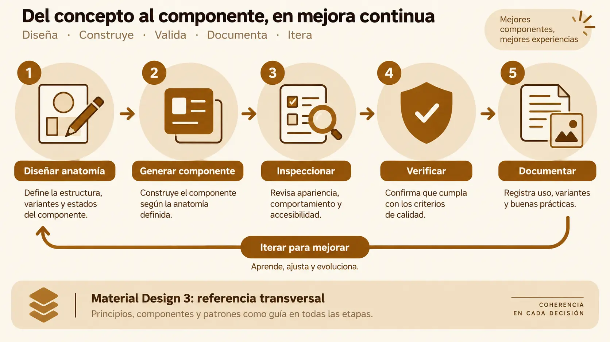

Contenido de la página
Objetivo docente
Identificar y elegir herramientas para diseñar, generar, inspeccionar y probar un componente.
Contenido para explicar
No hay una única herramienta que cubra bien todo el ciclo. Stitch facilita la propuesta visual; Material Design 3 aporta reglas; Gemini o AI Studio genera y explica una primera implementación; DevTools permite inspeccionar el resultado real; una herramienta de pruebas verifica el contrato. La elección se justifica por tarea, coste de entrada, exportación, accesibilidad y posibilidad de reproducir el resultado.

Ejemplo básico resuelto
| Necesidad | Herramienta | Decisión razonada |
|---|---|---|
| Variantes normal/completada | Stitch + M3 | Comparación visual rápida |
| Primera implementación | Gemini / AI Studio | Genera módulo explicado y acotado |
| Inspección | DevTools | Observa DOM, estilos, eventos y accesibilidad reales |
| Prueba inicial | Banco HTML + console.assert |
Sin instalación y con resultado visible |
| Escalado del proyecto | Vitest/Web Test Runner | Automatización repetible |
RA3-PB05 · Flujo de herramienta a evidencia
Enunciado para publicar
Diseña en Stitch tres estados de status-chip; solicita a la IA un Web Component conforme a esa anatomía; inspecciona sus atributos y árbol accesible; aplica una corrección localizada. Entrega enlaces o capturas, prompts y comparación antes/después.
Solución orientativa
Mostrar ejemplo de solución
La propuesta define estados pending, done y blocked, usa roles de color M3 sin depender solo del color y mantiene texto visible. El prompt exige HTML semántico, valor pending por defecto y explicación. DevTools revela que la primera salida duplicaba el texto para lectores; el alumno solicita ocultar el icono decorativo y verifica de nuevo. La evidencia vincula cada herramienta con una decisión concreta.
Ampliación voluntaria
Comparar el mismo contrato con un componente Android personalizado en Java/XML. No forma parte de la evaluación obligatoria ni sustituye la ruta web.